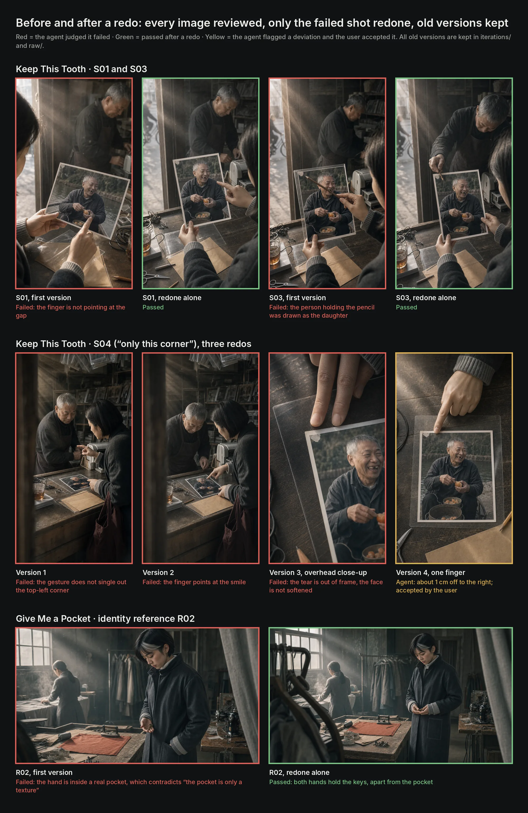
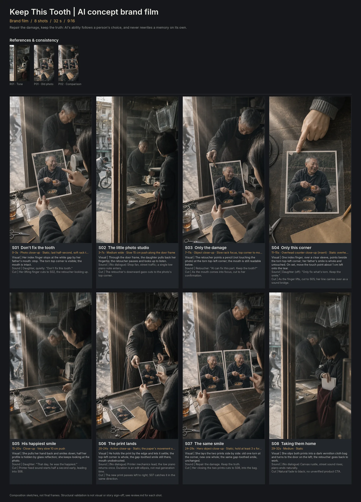
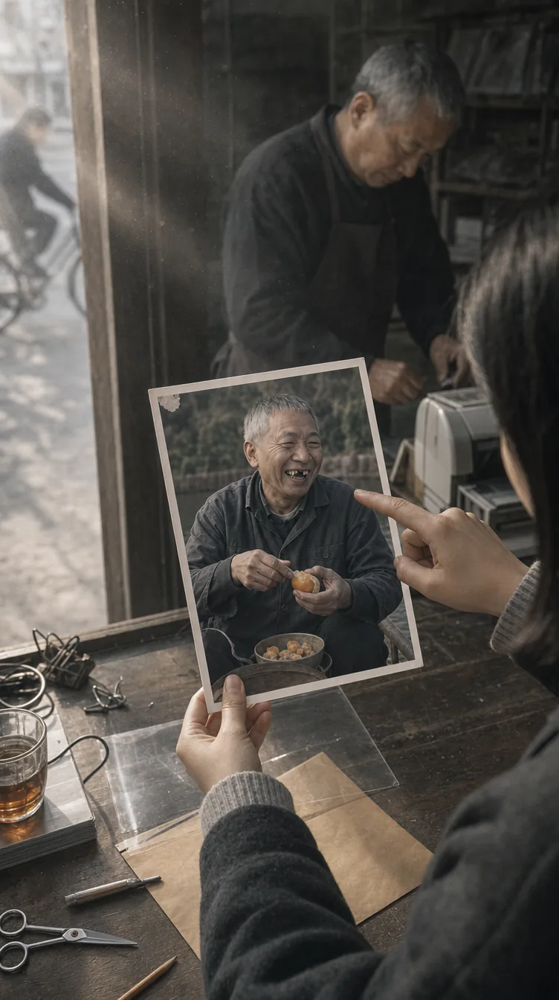
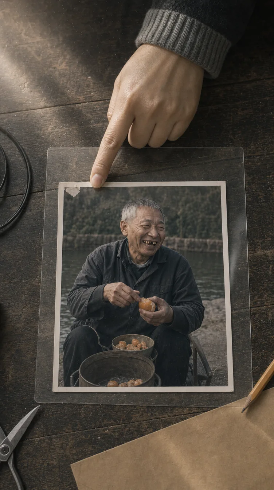
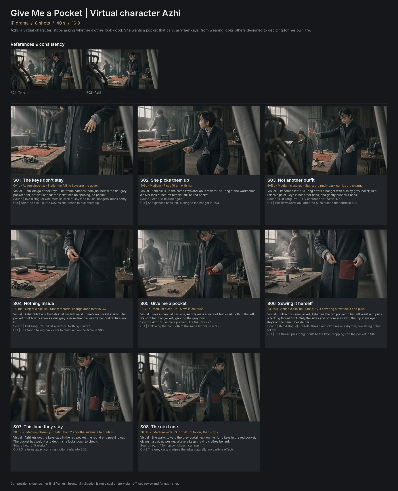
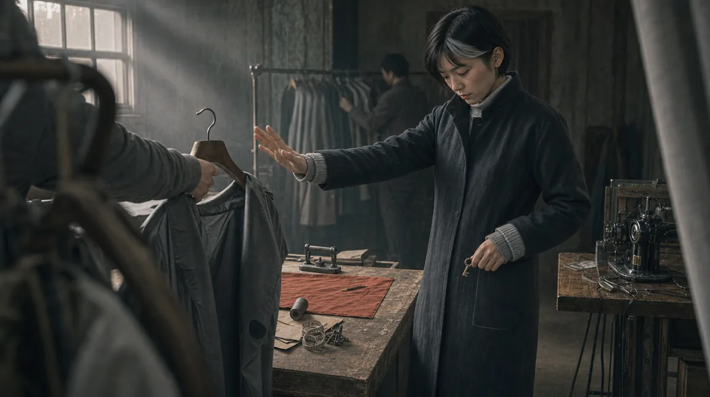
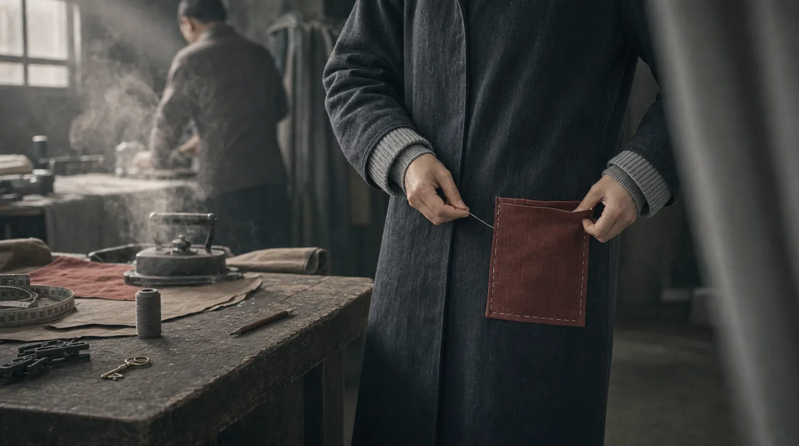
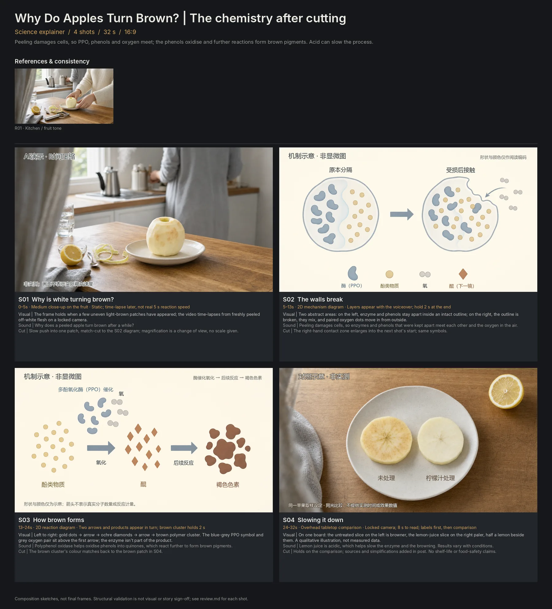
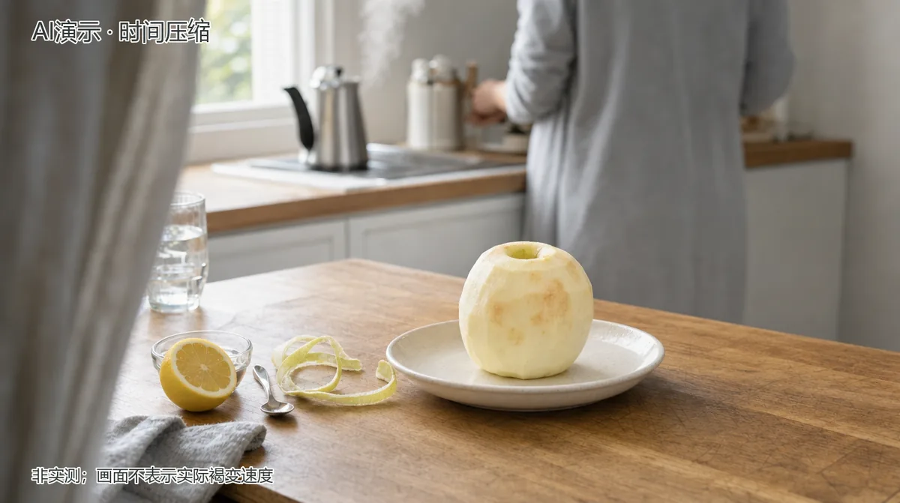
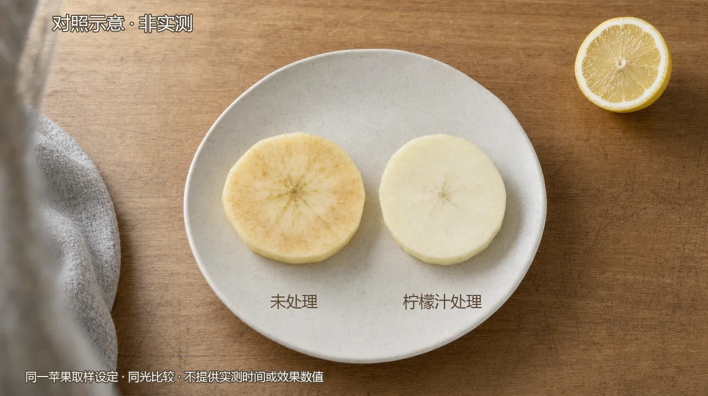

AI agent workflow · Skill design · Creative methods · Oct 2026
Storyboard Skill
An agent skill that turns one sentence into a production-ready storyboard: an outline, per-shot sketches and an overview board. It decides what kind of film the request is, applies a different creative method for brand films, IP dramas and science explainers, and checks its own work layer by layer.
Independent project. The sketches are composition frames generated with an image model, not final shots; nothing here was published or measured.
- Request
- Which kind of film?asks the user
- Thesis + 3 testsloops back
- Look spec
- Script by type
- Shot groups
- Tone frameuser approves
- Key shot, then batch
- Review every imageloops back
- Validatescript checks
- Board
In 30 seconds
- My role
- Solo, 3 days: skill design, creative methods, quality system, scripts, run recording
- The goal
- A skill an AI agent can call and run reliably, that treats a brand film, a drama and an explainer as three different jobs
- The idea
- Behave like a director: decide what kind of film it is, find one specific idea worth filming, check the work before handing over
- What it proves
- The loop runs on its own: three films from three sentences in one ~2-hour run, 33 images generated and reviewed by the agent, 7 redos logged, structure validated by script. The sketches are a by-product; the workflow is the work.
- Agent & skill design
- Creative direction
- Storyboarding
- Prompt systems
- Quality frameworks
- Python tooling
Watch the agent run it
“One prompt, one storyboard” says nothing
Generic storyboard prompts treat every request the same way: pick a topic, list some shots, generate pretty frames. The result usually looks expensive and says nothing. “A premium AI video” becomes glowing brains and blue particles. “Virtual fashion” becomes a catwalk.
I wanted the skill to behave more like a director: decide what kind of film this is, find one specific idea worth filming, and check its own work before handing it over.
Ten steps, from the sentence to the board
- Record the requestword for word; separate user constraints, working assumptions and creative proposals.
- Thesis and core frameWrite the single most representative frame and pass three specificity tests: Swap (would it still work for another topic?), Truth (what real situation does it reveal?), Shootable (could real people in a real place film it?). Fail → back to ideation.
- Cinematography specmedium, aspect, focal length, light source, palette with only one strong colour, texture, composition rules, banned clichés. Every image prompt derives from it.
- Script by typepromise and proof, or goal, obstacle and cause, or question, fact table and explanation chain.
- Referencesonly for people, places and props that repeat across shots.
- Shot groupspurpose, action, shot size, camera, motion, light, continuity, sound, transition, plus a motion brief for video production.
- Tone frame → user approvalbefore any shot sketches.
- Generatekey shot first; batch only after it passes. Raw and graded images kept separately.
- Review every imageredo only the failed shot and keep the old version.
- Validate and lay outthe outline, overview board and a read-only viewer.
Rules that make “premium” checkable
- Light has a source; colour is restrained, with at most one strong colour; materials are real; empty space is intentional.
- Six documentary-cinema rules: people are busy, not posing; a specific place with lived-in clutter; light through air; one consistent grade; observe through things; imperfection allowed.
- Clichés (glowing brains, blue-purple particles, holograms, neon, hair-flip catwalks) need a film-specific reason, or they’re replaced.
- Continuity of axis, eyelines, direction of movement, props and light. No text from the image model; captions and logos are added in post.
- “Make it go viral” becomes viewing mechanisms (hook, participation, payoff, screenshot frame), marked as an assumption, never a promise of reach.
It checks its own work, in layers
| Layer | What’s checked | Who judges |
|---|---|---|
| Technical structure | Continuous timing, required fields, type fields, image dependencies, files and aspect, no reuse | Script |
| Creative method | Specificity tests; brand proof, drama causality, science sources and limits | Agent, then user |
| Shot design | What each shot changes, and why the cut works | Agent |
| Image quality | Light, material, people, space, text, clichés, the six documentary rules | Agent, confirmed by designer |
| User acceptance | Does it match what they wanted? | User |

Three video types, three methods
The topic alone can’t decide the type: the same topic can be a brand film, a drama or an explainer. When a request is open, the skill asks one question that changes the direction: “Do you want viewers to remember a brand, a character, or understand a question?” If it can’t ask, it picks a route and writes the reason down as an assumption, never as something the user confirmed.
| Brand film | IP drama | Science explainer | |
|---|---|---|---|
| Goal | Remember a brand or a stance | Remember a character and their story | Understand one question |
| Answer first | Audience, goal, single promise | Who the character is, goal and obstacle | The exact question, what viewers already believe |
| Structure | Hook → visible proof → brand link | Action → consequence → new choice → change | Phenomenon → mechanism → evidence → limits |
| Must check | Is the benefit shown, or only claimed in voiceover? | Does every choice have a reason? Who knows what? | Does every fact have a source? Does the analogy overreach? |
| Required fields | single_promise · benefit_proof · creative_device · viewing_mechanism | character_sheet · causal_beats · knowledge_states · ending_change | question · claim_evidence_map · explanation_steps · analogy_limits |
The validation script enforces the type-specific fields: relabelling a brand film as a drama fails, and a science fact without a source, or not marked as verified, fails.
Keep This Tooth
- The request
- “Make me a premium AI video that can go viral.”
- Type
- The skill asked whether viewers should remember a stance, a character or an answer; the user chose a stance about AI → brand film.
- Film
- Keep This Tooth · vertical 9:16 · 32 s · 8 shots
- Thesis
- Repair the damage, keep the truth. AI’s ability follows a person’s choice, and never rewrites a memory on its own.
- Story
- In an old photo studio, a daughter asks a retoucher to restore her father’s photo with AI, but insists: “Don’t fix this tooth.” Only the torn corner is repaired; her father’s gap-toothed smile stays.
- “Premium”, made concrete
- Documentary cinema: observed through door frames and glass, a real old shop, low sunlight through dust, one cool grey-green grade, and a single strong colour, the daughter’s dark vermilion bag.
- “Go viral”, as mechanisms
- Unverified: “Don’t fix this tooth” raises a question in the first two seconds; S07 puts old and new side by side for pausing; “Which imperfection would you keep?” invites comments.
What came out of the run, as evidence that the loop completed. The sketches are composition frames from an image model, not the point in themselves.



Redo log: the agent reviewed every image and redid seven times (S01, S03, S05, S06 once each; S04 three times), all logged with old versions kept. S04’s third version still had the fingertip about 1 cm off the tear: the agent marked it as not fully met, the user accepted it as “composition intent readable”, and both conclusions were recorded separately.
Give Me a Pocket
- The request
- “Design a cinematic storyboard for a Virtual Fashion video.”
- Type
- After the question, the user chose to remember a virtual character’s story → IP drama.
- Film
- Give Me a Pocket · landscape 16:9 · 40 s · 8 shots
- Thesis
- Azhi, a virtual character, stops asking whether clothes look good. She wants a pocket that can carry her keys: from wearing looks others designed to deciding for her own life.
- Story
- The pocket on Azhi’s jacket is only a texture, so her keys fall straight through. She refuses “a nicer outfit”, sews a square of brick-red cloth into a real pocket herself, and the keys finally stay.
- IP elements
- A recognisable character (silver lock at the left temple, dark grey jacket), goal and obstacle, causal beats, an ending change, and a series hook: “Tomorrow: shoes I can run in.”
- “Cinematic”, made concrete
- A real garment workshop, high-window light through dust and iron steam, observed through hanging cloth and racks, and one strong colour: the brick-red pocket.



Redo log: the first identity reference drew a real pocket, contradicting the “it’s only a texture” premise, so it was redone; S06 was redone once.
Why Do Apples Turn Brown?
A third film to exercise the science method on its own. The question is clear, so the skill classified it as a science explainer without asking.
- The request
- “Why does a peeled apple turn brown after a while?”
- Film
- Why Do Apples Turn Brown? · 16:9 · 32 s · 4 shots
- Explanation chain
- Phenomenon (the flesh browns) → condition (peeling breaks cell compartments, so PPO meets phenols and oxygen) → mechanism (phenols oxidise to quinones, which form brown pigments) → control (lemon juice’s acidity slows it).
- Fact check
- All four facts marked verified, with sources: University of Wisconsin–Madison; Science Buddies; American Chemical Society.
- Analogy limits
- The mechanism diagrams are labelled “illustrative, not a micrograph”; shapes and colours are only reading aids and arrows don’t imply quantities.



Tools, honestly
- All 33 sketches were made with Higgsfield gpt_image_2 (1k, high). Every image has a task ID, and the model field was checked from the task record.
- The skill isn’t tied to one image platform: step 8 first confirms which tools and models are actually available. Without one, it delivers a task package for someone else to generate and fill back in.
- The validation script only proves structure: continuous timing, complete fields, type fields, images present at the right aspect. It doesn’t replace looking at the images or human judgement.
- Method sources: director, storyboard and asset-management methods adapted from Alianess/minimax-h3-director-prompts (MIT); brand shot grammar references whystrohm/shotkit (Apache-2.0). The three creative methods, cinematography standard, output contract, quality review and all scripts are original.
- Limits: the sketches are composition frames, not final shots; some science diagrams carry Chinese labels because the original run was in Chinese; “viral” mechanisms are assumptions; the user-acceptance layer was me, so it isn’t independent review.
What I’d take forward
The most useful decision was refusing to let the topic choose the method. Asking one direction-setting question, then enforcing type-specific fields in code, is what made three very different films come out of the same skill. The second was separating “the structure is valid” from “the film is good”: the script can prove the first, but only looking at every frame, and logging every redo, gets you near the second.
Independent project. The sketches are composition frames generated with an image model, not final shots; nothing here was published or measured.